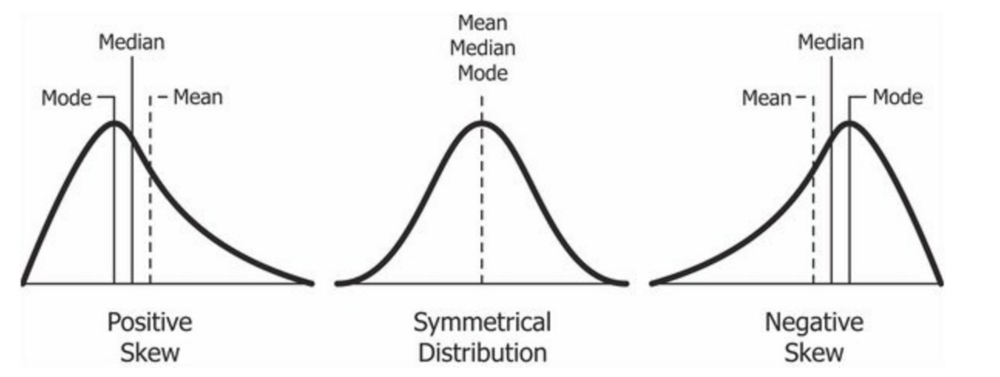
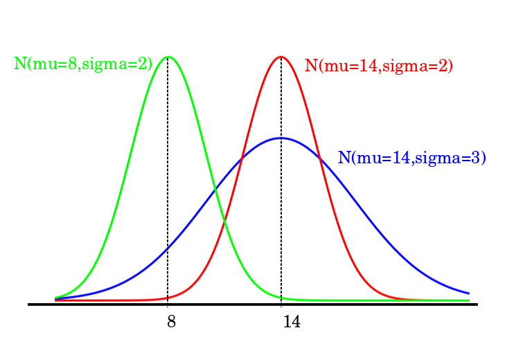
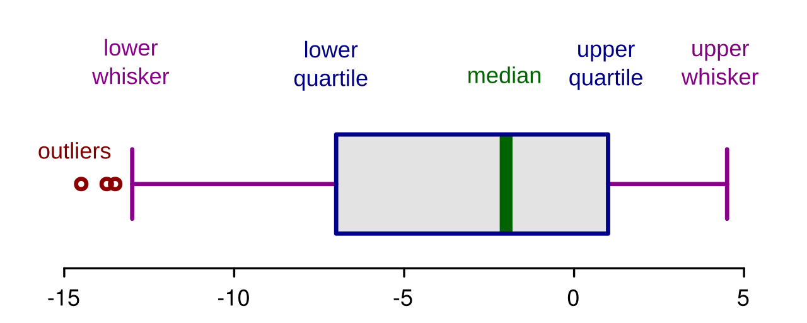
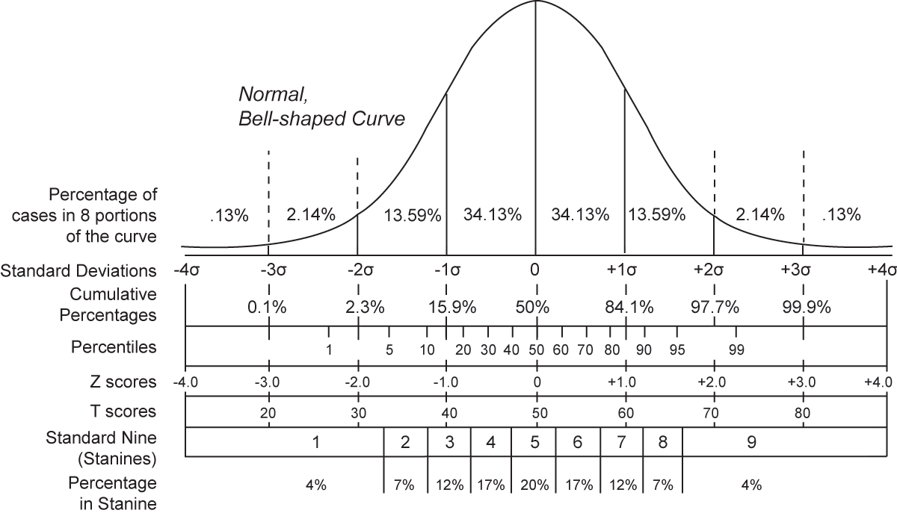
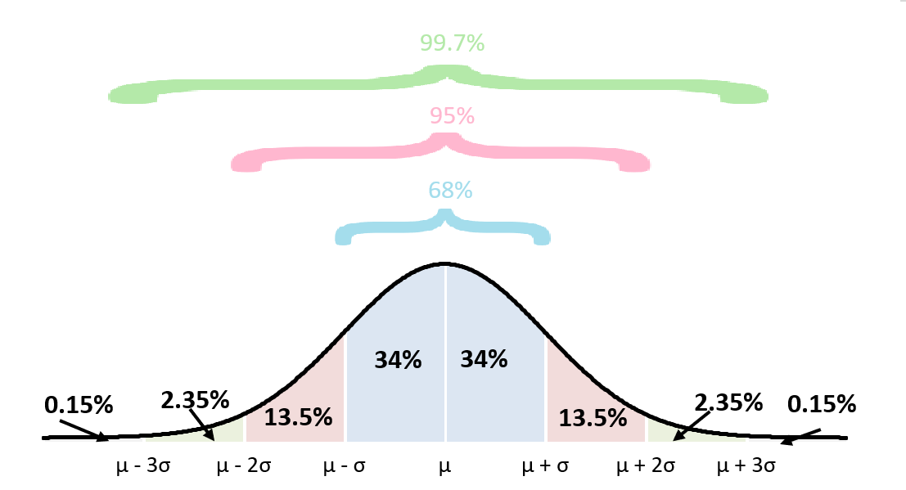

Center & Spread
A pile of numbers tells you nothing until you can answer two questions about it: where is the middle? and how spread out is everything else? Those two questions — center and spread — are the entire business of this chapter, and together they are the most useful pair of ideas in all of descriptive statistics. You will learn three ways to describe the middle and four ways to describe the spread, and you will learn when each one tells the truth and when it quietly lies. None of this requires talent for math; it requires only that you add, subtract, divide, and take a square root, one careful step at a time. Every formula here is worked out numerically at least once, so you can follow the arithmetic with your finger if you want to.
By the end of this chapter you can
- Compute the mean, median, and mode of a data set and explain what each one measures.
- Choose the right measure of center for skewed data, symmetric data, and categorical data.
- Compute the range, variance, and standard deviation, and explain why we divide by n − 1 for a sample.
- Build a five-number summary, find the interquartile range, and sketch a boxplot.
- Apply the 1.5 × IQR rule to flag outliers and state its limits.
- Convert a raw value to a z-score and back again, and use z-scores to compare values from different distributions.
- Apply the empirical rule (68–95–99.7) to bell-shaped data and say exactly when it does not apply.
- Use Chebyshev's theorem to place a guaranteed floor on the data in any distribution, whatever its shape.
Section 1Measures of center

Three different ideas of "middle"
Ordinary English has one word for the middle of a group of numbers. Statistics has three, because there are three genuinely different things you might mean. The mean is the balance point: add everything up and share it out equally. The median is the positional middle: line the values up smallest to largest and take the one standing in the center. The mode is the most popular value: whichever number shows up most often. On nicely symmetric data all three land in nearly the same place, which is why it is easy to think they are interchangeable. They are not.
Start with a small, honest data set. Seven people report the number of hours they spent on a task:
4, 8, 9, 9, 12, 13, 15
The mean — written x̄ ("x-bar") for a sample and μ ("mu") for a population — is the sum divided by the count:
x̄ = Σx / n
Here Σx = 4 + 8 + 9 + 9 + 12 + 13 + 15 = 70, and n = 7, so x̄ = 70 / 7 = 10 hours. The capital Greek sigma, Σ, is just an instruction: "add up everything that follows."
The median needs the values sorted, which they already are. With n = 7 (odd), the middle position is the (7 + 1) / 2 = 4th value. Counting in — 4, 8, 9, 9, 12, 13, 15 — the median is 9 hours. When n is even there is no single middle value, so you average the two middle ones. For 3, 7, 8, 12, 13, 14 the two middle values are 8 and 12, and the median is (8 + 12) / 2 = 10.
The mode is the value that occurs most often. Only 9 appears twice, so the mode is 9 hours. A data set can have one mode, two (bimodal), several (multimodal), or none at all if every value appears exactly once.
Why the choice matters: the outlier problem
Here is where the three measures come apart. Suppose a six-person company reports annual pay, in thousands of dollars:
38, 42, 45, 48, 52, 275
The mean is (38 + 42 + 45 + 48 + 52 + 275) / 6 = 500 / 6 = 83.3 thousand. The median, averaging the two middle values, is (45 + 48) / 2 = 46.5 thousand. Look at what just happened: the "average" salary at this company is $83,300, and five of the six employees earn less than that. One extreme value dragged the mean nearly forty thousand dollars away from anything a typical employee experiences. The median did not budge.
That difference has a name. A statistic is resistant (or robust) if extreme values barely move it. The median and the mode are resistant; the mean is not. The mean is not "wrong" here — it is a perfectly correct balance point, and if you want the total payroll, the mean times the head count gives it to you exactly. It is simply answering a different question than the one most people are asking when they say "typical."
The relationship between mean and median is also a quick shape detector. In a right-skewed (positively skewed) distribution — a long tail stretching toward high values, like income or hospital length of stay — the mean is pulled above the median. In a left-skewed distribution the mean falls below the median. When mean and median are close, the distribution is roughly symmetric.
Picking the right one
The choice is not a matter of taste; it follows from the data's shape and its measurement level. You cannot average eye color, and you should not average a data set whose whole story is in its tail.
| Measure | Definition | Use it when | Avoid it when |
|---|---|---|---|
| Mean | Σx / n — the balance point | Data are roughly symmetric and quantitative; you need a value that feeds later formulas (variance, z-scores, most inference) | Data are strongly skewed or contain outliers; data are categorical |
| Median | The middle value in sorted order | Data are skewed or have outliers; data are ordinal (ranked); you want "typical" | You need an algebraic quantity for later computation |
| Mode | The most frequent value | Data are categorical (blood type, brand, color); you want the most common category; you suspect two clusters | Values are continuous and mostly unique — the mode is then meaningless |
One more practical point: reported "averages" in the news are almost always means, and almost always applied to skewed quantities — income, home prices, wait times, medical costs. Whenever you see the word average attached to money or time, the honest follow-up question is "and what was the median?"
- The mean x̄ = Σx / n is the balance point; the median is the positional middle; the mode is the most frequent value.
- For an even n, the median is the average of the two middle sorted values.
- The median and mode are resistant to outliers; the mean is not.
- Mean > median suggests right skew; mean < median suggests left skew; mean ≈ median suggests symmetry.
- Only the mode works for categorical data.
Section 2Measures of spread

Why the center is only half the story
Consider two groups of five measurements:
Set A: 48, 49, 50, 51, 52
Set B: 30, 40, 50, 60, 70
Both sum to 250, so both have a mean of exactly 50. Report only the mean and the two sets are identical twins. Look at them and they are nothing alike: Set A is tightly packed, Set B is scattered. Spread (also called dispersion or variability) is the measurement that separates them, and in practice it is often the more important of the two. A process that averages the right answer but swings wildly is usually a worse process than one that is slightly off but consistent.
The crudest measure of spread is the range:
Range = maximum − minimum
For Set A the range is 52 − 48 = 4; for Set B it is 70 − 30 = 40. That already separates them, and the range is instantly understandable, which is why it is so widely quoted. Its weakness is fatal for serious work: it uses only two numbers and throws away everything in between, and both of those numbers are the most extreme values in the data set — exactly the ones most likely to be flukes. Add one typo to your spreadsheet and the range can change by an order of magnitude.
Variance and standard deviation, step by step
A better measure uses every value. The natural idea is to measure how far each value sits from the mean — its deviation, (x − x̄) — and then average those distances. There is one snag: the deviations always sum to exactly zero, because the mean is the balance point. The positives and negatives cancel perfectly, every time. The fix is to square each deviation first, which makes everything positive and, as a bonus, penalizes large departures more heavily than small ones.
Squaring gives the variance. There are two versions, and the difference is not cosmetic:
Population: σ2 = Σ(x − μ)2 / N
Sample: s2 = Σ(x − x̄)2 / (n − 1)
The numerator Σ(x − x̄)2 is called the sum of squares, abbreviated SS. Because variance is in squared units — squared dollars, squared minutes, which nobody can picture — we usually take the square root and report the standard deviation, which returns to the original units:
σ = √(σ2) s = √(s2)
Read the standard deviation as roughly how far a typical value sits from the mean. That is not its literal definition (it is the root-mean-square deviation, not the average absolute deviation), but it is the right mental picture and it will not mislead you.
Now the arithmetic, worked in full for Set A treated as a sample. First the mean: x̄ = 250 / 5 = 50.
| Value x | Deviation (x − x̄) | Squared deviation (x − x̄)2 |
|---|---|---|
| 48 | 48 − 50 = −2 | 4 |
| 49 | 49 − 50 = −1 | 1 |
| 50 | 50 − 50 = 0 | 0 |
| 51 | 51 − 50 = +1 | 1 |
| 52 | 52 − 50 = +2 | 4 |
| Totals | 0 ← always | SS = 10 |
Divide the sum of squares by n − 1 = 4:
s2 = 10 / 4 = 2.5 s = √2.5 ≈ 1.58
Run the same machinery on Set B. The deviations are −20, −10, 0, +10, +20; their squares are 400, 100, 0, 100, 400; SS = 1000. So s2 = 1000 / 4 = 250 and s = √250 ≈ 15.81. Every deviation in Set B is exactly ten times the matching deviation in Set A, so the standard deviation is exactly ten times as large — a useful sanity check, and a reminder that the standard deviation scales the same way the data do.
Had we treated Set A as an entire population, we would have divided SS by N = 5 instead: σ2 = 10 / 5 = 2 and σ = √2 ≈ 1.41. Notice that the sample version is always the larger of the two.
Why n − 1, and how to compare spreads fairly
The n − 1 in the sample formula is called Bessel's correction, and the reason for it is worth understanding rather than memorizing. When you compute deviations from the sample mean, you are measuring distances from a center that was itself calculated from those same data points — the sample mean sits right in the middle of your particular sample by construction. Distances from it are therefore systematically a little too small compared with distances from the true population mean μ, which you do not know. Dividing by the smaller number n − 1 inflates the result just enough to correct that bias: s2 computed this way is an unbiased estimator of σ2, meaning that over many repeated samples it averages out to the right answer. The quantity n − 1 is also called the degrees of freedom: once you know the mean and any four of five values, the fifth is forced, so only four of the deviations are free to vary.
Finally, a standard deviation only means something next to its own mean. An s of 15 is enormous for adult body temperature and trivial for annual income. To compare variability across different scales or different units, use the coefficient of variation, which expresses the standard deviation as a percentage of the mean:
CV = (s / x̄) × 100%
For Set A, CV = (1.58 / 50) × 100% ≈ 3.2%. For Set B, CV = (15.81 / 50) × 100% ≈ 31.6%. Set B is about ten times as variable, relative to its own center. The CV requires a ratio-level variable with a meaningful zero and a positive mean; it is nonsense for a scale like Celsius temperature, where zero is arbitrary.
- Range = max − min: simple, but built from the two least trustworthy values.
- Deviations (x − x̄) always sum to zero, so we square them; the total is the sum of squares.
- Sample variance s2 = SS / (n − 1); population variance σ2 = SS / N.
- Standard deviation is the square root of the variance and is back in the original units.
- n − 1 (Bessel's correction, the degrees of freedom) makes s2 an unbiased estimate of σ2.
Section 3The five-number summary

Quartiles and the summary itself
The median splits a sorted data set into two halves. Split each half again and you get the quartiles: three cut points that carve the data into four equal-sized quarters. Q1, the first quartile, has 25% of the data below it; Q2 is the median with 50% below; Q3, the third quartile, has 75% below it. Quartiles are a special case of percentiles — the pth percentile is the value below which roughly p% of the data fall, so Q1 is the 25th percentile and Q3 is the 75th.
Put the two extremes on either end and you have the five-number summary: minimum, Q1, median, Q3, maximum. Five numbers, and you know the center, the spread, the shape, and the reach of the data. It is the most information-per-character description in statistics.
Work an example. Twelve response times, in minutes, already sorted:
3, 7, 8, 12, 13, 14, 18, 21, 22, 26, 31, 58
Step 1 — median. With n = 12 (even), average the 6th and 7th values: (14 + 18) / 2 = 16.
Step 2 — Q1. Take the lower half, the six values below the median position: 3, 7, 8, 12, 13, 14. Its median is (8 + 12) / 2 = 10.
Step 3 — Q3. Take the upper half: 18, 21, 22, 26, 31, 58. Its median is (22 + 26) / 2 = 24.
Step 4 — the summary. Minimum 3, Q1 10, median 16, Q3 24, maximum 58.
From these you immediately get the interquartile range:
IQR = Q3 − Q1 = 24 − 10 = 14
The IQR is the width of the middle 50% of the data. Compare it with the range, which is 58 − 3 = 55. The range says these data sprawl across 55 minutes; the IQR says the typical half of them fit inside a 14-minute window. Both are true, and the disagreement is telling you that something unusual lives out in the right tail. Like the median, the IQR is resistant — you could change that 58 to 5800 and the IQR would not move at all.
A small warning that saves a lot of confusion later: there are several legitimate conventions for computing quartiles, differing in whether the median value itself is included when splitting an odd-sized data set, and in how they interpolate. The method used above — take the median of each half — is the one taught in most introductory treatments, which exclude the median from both halves when n is odd; Tukey's original hinges instead include it in both. With an even n, as here, the two agree exactly. Different software packages may report Q1 and Q3 that differ slightly from your hand calculation. Neither is wrong; they are answering the question with different rules.
Boxplots and the 1.5 × IQR rule
A boxplot (box-and-whisker plot) draws the five-number summary. A box spans from Q1 to Q3, so its width is the IQR; a line inside marks the median. Whiskers then extend outward — but not automatically to the minimum and maximum. They stop at the most extreme values that are still considered ordinary, and anything beyond gets plotted as an individual dot.
What counts as ordinary is set by the 1.5 × IQR rule, which defines two fences:
Lower fence = Q1 − 1.5 × IQR
Upper fence = Q3 + 1.5 × IQR
Any value outside the fences is flagged as an outlier. For our response times, 1.5 × IQR = 1.5 × 14 = 21, so:
| Quantity | Calculation | Result |
|---|---|---|
| Minimum | smallest value | 3 |
| Q1 | median of lower half | 10 |
| Median (Q2) | (14 + 18) / 2 | 16 |
| Q3 | median of upper half | 24 |
| Maximum | largest value | 58 |
| IQR | 24 − 10 | 14 |
| 1.5 × IQR | 1.5 × 14 | 21 |
| Lower fence | 10 − 21 | −11 |
| Upper fence | 24 + 21 | 45 |
| Outliers | values < −11 or > 45 | 58 only |
So the boxplot's left whisker reaches down to 3 (the smallest value, comfortably inside the lower fence), the right whisker stops at 31 (the largest value that is not an outlier), and 58 is drawn as a lone point off to the right. Note that no value can fall below the lower fence of −11 here, since times cannot be negative — so this rule can only ever flag high outliers in these data, which is worth remembering before you read the single flag as evidence of anything by itself. The skew is better judged from the summary as a whole: the outlier sits in the upper tail, Q3 is farther from the median (24 − 16 = 8) than Q1 is (16 − 10 = 6), and the mean of these twelve values, 233 / 12 ≈ 19.4, sits well above the median of 16. All three point the same way — the data are right-skewed.
Boxplots earn their keep when you place several side by side. Comparing three groups by boxplot lets you read differences in center (median lines), differences in spread (box lengths), differences in skew (whether the median sits off-center in its box), and the presence of stragglers — all at a glance and all without assuming anything about the shape of the distributions.
- The five-number summary is minimum, Q1, median, Q3, maximum.
- IQR = Q3 − Q1 is the width of the middle 50% and is resistant to outliers.
- A boxplot draws the box from Q1 to Q3 with the median inside; whiskers reach the last non-outlier.
- Fences sit at Q1 − 1.5 × IQR and Q3 + 1.5 × IQR; values beyond them are flagged as outliers.
- Quartile conventions vary slightly between textbooks and software — expect small differences.
Section 4Z-scores

Standardizing a value
Two exams, two different scoring systems. You scored 82 on one and 88 on the other. Which performance was better? The raw numbers cannot answer that, because they are measured on different rulers. What you need is a way to strip away the scale of each exam and ask a scale-free question: how far above or below its own mean did each score fall, measured in standard deviations?
That is exactly what a z-score (also called a standard score) does:
z = (x − μ) / σ or, for a sample, z = (x − x̄) / s
Read the formula in two moves. The numerator (x − μ) says how far the value sits from the center, in the original units. Dividing by σ says in what currency to express that distance: standard deviations. The result is a pure number with no units at all, which is what makes it comparable across any two distributions you like.
Now settle the exam question. Suppose Exam A had a mean of 75 with a standard deviation of 5, and Exam B had a mean of 80 with a standard deviation of 10.
| Exam | Your score x | Mean μ | SD σ | z-score | Reading |
|---|---|---|---|---|---|
| Exam A | 82 | 75 | 5 | (82 − 75) / 5 = 7 / 5 = +1.40 | 1.40 SD above the mean |
| Exam B | 88 | 80 | 10 | (88 − 80) / 10 = 8 / 10 = +0.80 | 0.80 SD above the mean |
The lower raw score is the stronger performance. On Exam A you beat your classmates by 1.40 standard deviations; on Exam B, only 0.80. The 88 looked better only because Exam B was easier and more spread out. This is the whole point of standardizing: it converts "how many points" into "how unusual," and only the second one is comparable.
The sign carries meaning on its own. A positive z means above the mean, a negative z means below, and z = 0 means the value is exactly at the mean. Standardize an entire data set and the transformed values always have a mean of 0 and a standard deviation of 1. Try it on Set A from Section 2 (x̄ = 50, s ≈ 1.58): the values 48, 49, 50, 51, 52 become z-scores of about −1.26, −0.63, 0, +0.63, +1.26, which sum to zero.
Running the formula backwards, and reading the size
The formula rearranges, which is just as useful. Solving z = (x − μ) / σ for x:
x = μ + zσ
Suppose a measurement has μ = 70 and σ = 8, and you are told a particular observation has z = −1.50. Then x = 70 + (−1.50)(8) = 70 − 12 = 58. Any question of the form "what value sits two standard deviations above the mean?" is answered this way.
As for how big a z-score has to be before it is interesting, a common working convention treats |z| > 2 as unusual and |z| > 3 as very unusual. Those thresholds come from the empirical rule in the next section and therefore assume a roughly bell-shaped distribution. They are conventions, not laws.
| z-score | Position | Rough reading (bell-shaped data) |
|---|---|---|
| 0 | At the mean | Perfectly typical; about the 50th percentile |
| +1 | 1 SD above | Around the 84th percentile |
| −1 | 1 SD below | Around the 16th percentile |
| ±2 | 2 SD from the mean | Unusual — only about 5% of values are this far out or farther |
| ±3 | 3 SD from the mean | Very unusual — roughly 0.3% of values |
One caution that trips up nearly everyone. Computing a z-score requires no assumption about the shape of the distribution — you can standardize any data set with a mean and a standard deviation, however lopsided. But turning a z-score into a percentile or a probability does require knowing the shape. The right-hand column of the table above is valid for bell-shaped data and can be badly wrong for skewed data. A z of +2 sits at about the 98th percentile of a bell-shaped distribution, but in a strongly right-skewed one it can land nearer the 95th — and with other shapes it can miss in the opposite direction. The only way to know is to look at the distribution.
- z = (x − μ) / σ expresses a value as a number of standard deviations from the mean.
- z-scores are unitless, which is what lets you compare values from different distributions.
- Rearranged, x = μ + zσ converts a z-score back into an original-scale value.
- A standardized data set always has mean 0 and standard deviation 1.
- Standardizing needs no shape assumption; converting z to a percentile does.
Section 5The empirical rule

68–95–99.7 for bell-shaped data
If a distribution is bell-shaped — roughly symmetric, single-peaked, with tails thinning smoothly on both sides — then the standard deviation does something remarkable: it predicts, quite precisely, how much of the data lies where. This is the empirical rule, also called the 68–95–99.7 rule:
| Interval | Approximate share of data | More precise value |
|---|---|---|
| μ ± 1σ | about 68% | 68.27% |
| μ ± 2σ | about 95% | 95.45% |
| μ ± 3σ | about 99.7% | 99.73% |
Work an example. A standardized assessment is bell-shaped with μ = 100 and σ = 15. Then:
- One SD: 100 − 15 = 85 and 100 + 15 = 115. About 68% of scores fall between 85 and 115.
- Two SD: 100 − 30 = 70 and 100 + 30 = 130. About 95% of scores fall between 70 and 130.
- Three SD: 100 − 45 = 55 and 100 + 45 = 145. About 99.7% of scores fall between 55 and 145.
Because the bell is symmetric, you can split the leftovers evenly and answer one-sided questions too. Outside ±2σ lies 100% − 95% = 5% of the data, half in each tail, so about 2.5% of scores exceed 130 and about 2.5% fall below 70. Outside ±1σ lies 32%, so about 16% of scores exceed 115. And since 68% sits inside ±1σ, half of that — 34% — lies between 100 and 115.
A footnote for later chapters: "95%" is a rounding. The interval containing exactly 95% of a normal distribution is μ ± 1.96σ, not μ ± 2σ. The 1.96 will reappear constantly once you reach confidence intervals, so it is worth meeting now.
Chebyshev's theorem: the guarantee that always holds
The empirical rule has a hard precondition: the data must be bell-shaped. Apply it to a strongly skewed distribution — incomes, wait times, insurance claims — and it will lie to you, often badly. So what can you say when you do not know the shape, or when you know it is not bell-shaped?
Chebyshev's theorem answers that. For any distribution whatsoever — any shape, any skew, any number of peaks, so long as it has a mean and a standard deviation to speak of — the proportion of data lying within k standard deviations of the mean is at least:
1 − 1 / k2 (for any k > 1)
Substitute a few values of k. For k = 2: 1 − 1/22 = 1 − 1/4 = 0.75, so at least 75% of any data set lies within 2 SD of its mean. For k = 3: 1 − 1/9 = 0.889, so at least 88.9% lies within 3 SD. For k = 4: 1 − 1/16 = 0.9375, at least 93.75%. The restriction k > 1 exists because at k = 1 the formula gives 1 − 1 = 0, a true but useless statement.
A worked case. A right-skewed set of processing times has μ = 200 seconds and σ = 20 seconds, and you are asked what fraction of jobs finish between 140 and 260 seconds. First find k: the interval reaches 60 seconds on either side of the mean, and 60 / 20 = 3, so k = 3. Chebyshev then guarantees at least 1 − 1/32 = 1 − 0.111 = 88.9% of jobs fall in that window. You did not need to know the shape at all — that is the point.
| k | Interval | Chebyshev guarantees at least | Empirical rule says (bell-shaped only) |
|---|---|---|---|
| 2 | μ ± 2σ | 75% | about 95% |
| 3 | μ ± 3σ | 88.9% | about 99.7% |
| 4 | μ ± 4σ | 93.75% | about 99.99% |
| 5 | μ ± 5σ | 96% | > 99.99% |
Read that table carefully, because the two columns are not competing estimates. Chebyshev states a floor that is never violated; the empirical rule states an approximation that holds when the bell shape holds. There is no contradiction in "at least 75%" and "about 95%" describing the same interval — 95% is comfortably at least 75%. Chebyshev buys universality at the price of vagueness. The empirical rule buys precision at the price of an assumption you must check.
How do you check it? Look at the data before you assume: plot a histogram, compare the mean with the median, sketch a boxplot and see whether the median sits centered in its box. Every tool from Sections 1 through 3 exists partly to answer this one question.
- The empirical rule: about 68%, 95%, and 99.7% of bell-shaped data lie within 1, 2, and 3 SD of the mean.
- Symmetry lets you halve the leftover: about 2.5% of bell-shaped data lie above μ + 2σ.
- Exactly 95% corresponds to μ ± 1.96σ, not ±2σ.
- Chebyshev's theorem: for any shape, at least 1 − 1/k2 of the data lie within k SD of the mean (k > 1).
- Chebyshev is a guaranteed minimum; the empirical rule is an approximation that requires the bell shape.
The chapter in one breath
- Center comes in three flavors: the mean (balance point), the median (positional middle), and the mode (most frequent value).
- The mean is pulled by outliers and skew; the median is resistant, so report it whenever the data are lopsided — and report both when they disagree.
- Spread is the other half of the story: two data sets with identical means can be nothing alike.
- Variance averages squared deviations — σ2 = SS / N for a population, s2 = SS / (n − 1) for a sample — and the standard deviation is its square root, back in the original units.
- The five-number summary (min, Q1, median, Q3, max) plus the IQR describes center, spread, and shape without assuming anything; the boxplot draws it.
- The 1.5 × IQR rule flags outliers for investigation — it is a prompt to look, never a license to delete.
- A z-score, (x − μ) / σ, converts any value into standard deviations from its own mean, making values from different distributions directly comparable.
- The empirical rule (68–95–99.7) is precise but demands a bell shape; Chebyshev's theorem (at least 1 − 1/k2) is vaguer but always true.
ReferenceWords worth knowing
A quick reference for the terms in this chapter — skim it now, or circle back whenever a word trips you up.
- Bessel's correction
- Dividing the sum of squares by n − 1 rather than n when computing a sample variance, so that s2 is an unbiased estimate of the population variance σ2.
- Boxplot
- A box-and-whisker plot: a box from Q1 to Q3 with the median marked inside, whiskers to the most extreme non-outlier values, and outliers drawn as separate points.
- Chebyshev's theorem
- For any distribution regardless of shape, at least 1 − 1/k2 of the data lie within k standard deviations of the mean, for any k > 1.
- Coefficient of variation (CV)
- The standard deviation expressed as a percentage of the mean, (s / x̄) × 100%; used to compare variability across different scales or units.
- Degrees of freedom
- The number of values in a calculation that are free to vary; for a sample variance it is n − 1, because fixing the mean determines the last value.
- Deviation
- The signed distance of a single value from the mean, (x − x̄). Deviations from the mean always sum to zero.
- Empirical rule
- For bell-shaped distributions, roughly 68%, 95%, and 99.7% of the data lie within one, two, and three standard deviations of the mean.
- Five-number summary
- The set minimum, Q1, median, Q3, maximum — a compact description of center, spread, and shape.
- Interquartile range (IQR)
- Q3 − Q1, the width of the middle 50% of the data; a resistant measure of spread.
- Mean
- The arithmetic average, x̄ = Σx / n for a sample and μ = Σx / N for a population; the balance point of the data.
- Median
- The middle value of sorted data; with an even count, the average of the two middle values. Also the 50th percentile and the second quartile.
- Mode
- The most frequently occurring value; the only measure of center usable with categorical data. A data set may have one, several, or no mode.
- Outlier
- A value far from the bulk of the data; commonly defined as any value beyond Q1 − 1.5 × IQR or Q3 + 1.5 × IQR.
- Percentile
- The value below which a given percentage of the data falls; the 25th, 50th, and 75th percentiles are the three quartiles.
- Quartile
- One of the three cut points (Q1, Q2, Q3) dividing sorted data into four equal-sized groups.
- Range
- Maximum minus minimum; the simplest measure of spread and the least resistant, since it depends only on the two extreme values.
- Resistant measure
- A statistic that changes little when extreme values are added or altered; the median and IQR are resistant, the mean and range are not.
- Skewed distribution
- An asymmetric distribution with a longer tail on one side; right (positive) skew pulls the mean above the median, left (negative) skew pulls it below.
- Standard deviation
- The square root of the variance (σ or s); roughly, how far a typical value sits from the mean, expressed in the original units.
- Sum of squares (SS)
- Σ(x − x̄)2, the total of the squared deviations; the numerator of every variance formula.
- Variance
- The mean of the squared deviations: σ2 = SS / N for a population, s2 = SS / (n − 1) for a sample. Its units are the original units squared.
- Z-score
- A standardized value, z = (x − μ) / σ, giving the number of standard deviations a value lies above or below its mean; unitless, so comparable across distributions.